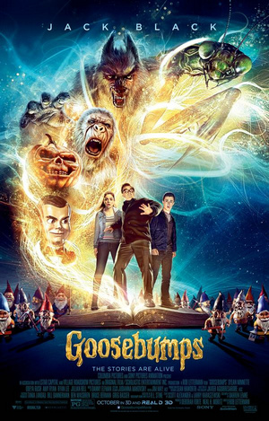

Suicide Squad is one of the most anticipated movies scheduled to debut next year. There are several things comic and superhero movie fans are looking forward from this movie, including watching Will Smith play a bad guy, and having Amanda Waller (Viola Davis) on the big screen for the first time. But, possibly the most looked forward to aspect of the movie has already been discussed quite a lot: Jared Leto’s performance as the Joker, which had an unexpected effect on his co-stars. Corina Calderon, whose exact role in Suicide Squad is still a closely guarded secret, echoes some of the previously stated intensity of Jared Leto’s performance and on-set behavior. He gifted his cast members with live rats and bullets, and teased his own crazy filmic acts by announcing that people will want him locked up after seeing it. Will Smith says his co-star went total method actor on the cast, to the point where he didn’t let anyone actually get to know the real him. Poor Margot Robbie (Harley Quinn) was even terrified of the man during filming. With all that going on, it's not hard to believe that many actors on the set saw his dedication just as Calderon did. What we know about the film, so far, is not a whole lot. Reports from the set and early footage seen at Comic-Con suggest that the Joker will not be a major part, and may actually be in prison for a large portion of the action. Other than that possible Joker-specific tidbit, we know the movie deals with Belle Reve Prison warden Amanda Waller and her enlistment of a crack team of imprisoned super villains for secret government missions. They sign up for the dangerous tasks because of the promise of reduced sentences for all involved. So, could all this Joker talk be smoke and mirrors? I seriously doubt it. It’s one thing to hype a movie you know might not be all it’s cracked up to be. It is part of an actor’s job to try to make sure their movies make money, after all. But for everyone to go on and on about a specific performance with this kind of effort? It’s highly unlikely we would have heard this much about how Jared Leto came into Suicide Squad, acted his ass off, and then dropped the mic like the badass he clearly is. Might he pull off the same level of performance that Heath Ledger did playing the same part in The Dark Knight? Only time will tell, but we can all place safe bets that watching him try will probably take the film to another level. By:Adriene Jones
After two weekends at number one The Martian dropped low enough to let some of the usual October doldrum entries have a shot at number one. One of the 20th century's most popular children's book series got an adaptation and took the opportunity. If you were in middle school or junior high in the 1990s you were probably part of the group of young readers that made R. L. Stine a household name. His book series, at its peak, sold more than 4 million copies each month. This weekend, an adaptation of Goosebumps starring Jack Black banked $23 million scare up the number one spot at the box office. The Martian added $21 million to its now $143 million domestic total, dropping to second place and handily topping Steven Spielberg's latest drama Bridge of Spies. Despite having major names attached (directed by Spielberg, written by the Coen brothers, starring Tom Hanks), it settled for a quiet $15 million debut. Putting that against its $40 million budget, the movie is going to have to draw heavily on international sales to get out of the red. Guillermo del Toro's latest offering Crimson Peak took a hard hit, landing a fourth place opening with just $12 million. That's his lowest wide opening release since Mimic in 1997, but better than his last fantasy horror flick Pan's Labyrinth. That film was a foreign language entry that didn't see the inside of more than 1,200 screens during its release in North America but still managed $37 million over the course of its run. Del Toro has a strong international following and the movie has $13 million in foreign sales to date, but it still has some ground to cover to catch up to its reported $55 million production budget. Pan took a hard but not unexpected hit dropping more than 60% and slipping to sixth place. To date it has only earned $25 million domestically and another $25 million internationally, against a hefty $150 million budget, locking in its spot as one of the years biggest busts. Feel-good sports flick Woodlawn opened in the number nine spot with $4 million.